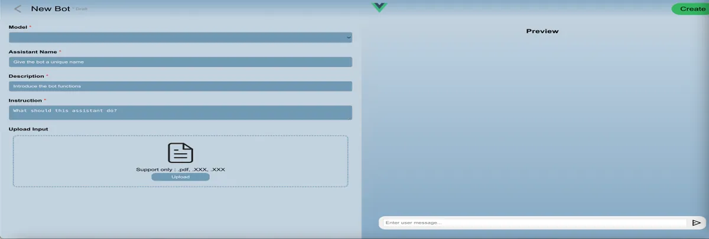
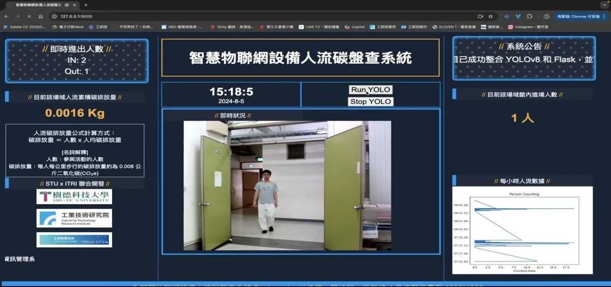
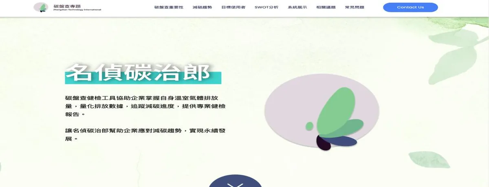
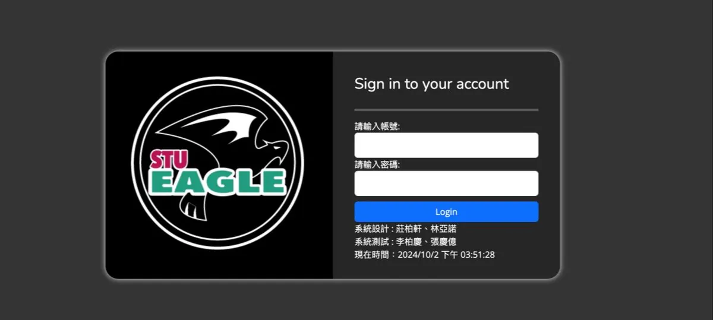
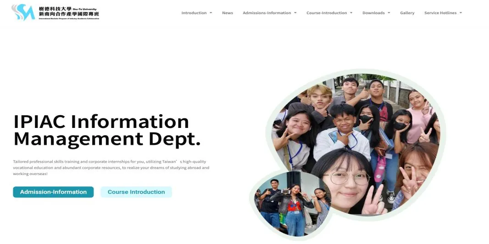
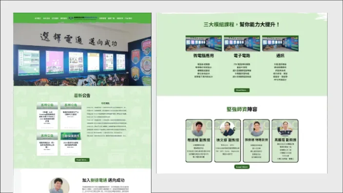
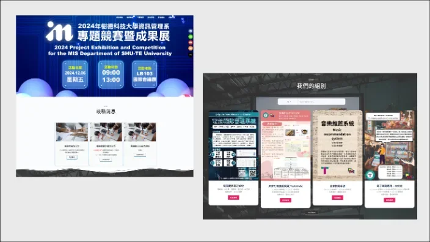
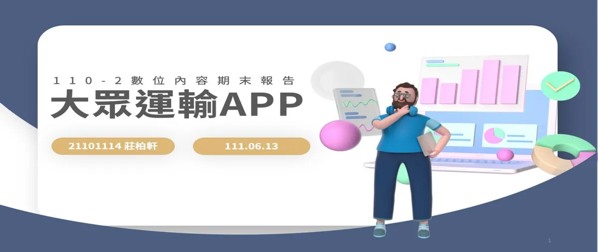
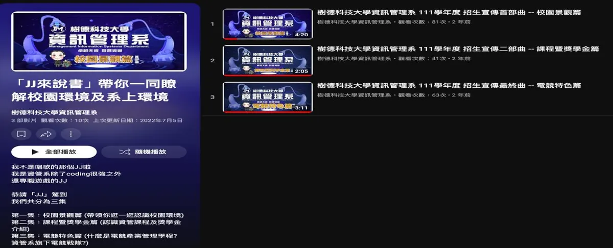
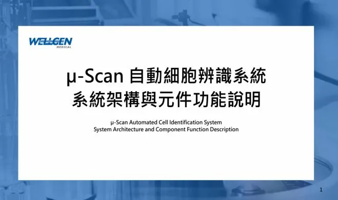

代表作品
ASKY：AI 共同協作平台
2024 DIGI+ Talent 計畫，在錚典科技實習時完成。使用者可以打造專屬 Assistants bot 並做數據分析，我負責後端 API、ChatGPT API 串接和資料庫，也在期末成果展上台發表。
C#ASP.NETVueChatGPT API
查看完整案例 →
關於我・碩士班在學中
後端與 AI 應用開發，也拍片剪片
我在高雄科技大學讀智慧商務碩士班，大學念資訊管理。實習做過 AI 協作平台、影像辨識和碳盤查系統，也負責過招生節目與線上課程的拍攝剪輯。
全國技能競賽南區分區
商務軟體設計 第四名
我的背景
從樹德家商資料處理科、樹德科大資訊管理系，一路念到高科大智慧商務系碩士班。四段實習讓我熟悉後端開發、資料庫設計與 AI 應用整合；在系上也長期負責影片拍攝剪輯與賽事轉播，能同時兼顧系統開發與內容製作。
學歷
國立高雄科技大學
智慧商務系碩士班
2025/9 – 迄今
樹德科技大學 資訊管理系
2021/9 – 2025/6
私立樹德家商 資料處理科
2019/9 – 2021/6

實習與工作經驗
4 段實習
工研院、錚典科技、威捷生醫
證照
電腦軟體應用 丙級
TQC-OA WORD、PowerPoint、中文輸入
ITS – Databases
Workflow ERP GP 配銷模組應用工程師
研究機構、企業與學校
工業技術研究院
電光系統所 實習
錚典科技國際有限公司
兩屆 DIGI+ Talent 實習
威捷生物醫學
研發實習生
樹德科技大學
計畫助理、網站設計、工讀
PORTFOLIO
系統開發、網站介面、影音製作到技術文件，共 13 項作品。

2024 DIGI+ Talent 計畫，在錚典科技實習時完成。使用者可以打造專屬 Assistants bot 並做數據分析，我負責後端 API、ChatGPT API 串接和資料庫，也在期末成果展上台發表。

工研院實習・擔任組長
整合 YOLOv8 辨識人流，依人數推算區域碳排放量，數據存入 MySQL 統計分析，並在校園實地測試。
Python・YOLOv8・Flask・MySQL






課程「數位內容」期末專案
找出現有大眾運輸 APP 不足的地方，利用 APP 上原有的資訊重新設計 UI/UX。
UI/UX・Before / After

樹德科技大學 資訊管理系
結合 PowerBI 數據視覺化與無人機飛行體驗的營隊，負責拍攝並用 Premiere Pro 剪輯成精華影片。
拍攝・Premiere

高中職社團活動
無人機社團的定點飛行與障礙穿越競賽，全程由學生拍攝，用 Premiere Pro 剪輯成活動回顧影片。
拍攝・Premiere Pro

115 年度 UNEXT 數位創新人才增能培育計畫。整理 μ-Scan 系統的架構與元件功能，依操作流程說明各模組的 UI 元件、輸入輸出、流程圖及例外處理，作為開發、維護與交接的依據。
技術文件・流程圖・中英雙語
查看完整案例 →工作經歷
2026/7 – 2026/9
威捷生物醫學股份有限公司
撰寫結核菌玻片掃描檢驗系統三大模組的技術文件與流程圖。
2025/1 – 2025/5
樹德科技大學 電腦與通訊系（所）
用 WordPress 改版系網，改善操作流程和手機上的瀏覽體驗。
2024/7 – 2024/11
錚典科技國際有限公司
開發 ASKY 的後端 API，串接 ChatGPT API 並設計資料庫，於期末成果展上台發表。
2024/7 – 2025/1
樹德科技大學 資訊管理系
協助老師拍攝及剪輯 LINE OA 系列線上課程。
2024/3 – 2024/8
工業技術研究院 電光系統所
用 YOLOv8 和 Flask 完成人流碳盤查系統，並在校園實測。
2024/2 – 2024/7
樹德科技大學 資訊管理系
負責計畫經費計算、核銷與行政流程。
2023/7 – 2023/11
錚典科技國際有限公司
用 Laravel、PHP 與 MySQL 開發名偵碳治郎的系統功能和資料庫。
2022/2 – 2025/6
樹德科技大學 資訊管理系
處理系辦行政，支援招生與成果展活動，維護網站及社群資訊。
2021/9 – 2021/11
樹德科技大學 電算中心
協助維修校園大樓與宿舍網路，處理一般行政業務。
專業能力
競賽榮譽
參加過多屆全國技能競賽，也在黑客松、DIGI+ 成果發表與畢業專題展中得獎。
第四名
第 54 屆全國技能競賽南區分區 商務軟體設計
佳作
第 53 屆全國技能競賽南區分區 商務軟體設計
企業佳作獎
支付在手，串起智慧生活 Stream Your Life 黑客松
高雄市代表隊
2023 CCCE 城市盃數位科藝電競邀請賽 快速錄剪播 全國組
優選
2024 DIGI+ Talent 跨域數位人才加速躍升計畫 期末成果發表
第三名
2024 樹德科技大學資訊管理系 畢業專題暨成果展
專案合作、實習或工作機會，都歡迎來信。
電子信箱
s20356025@gmail.com